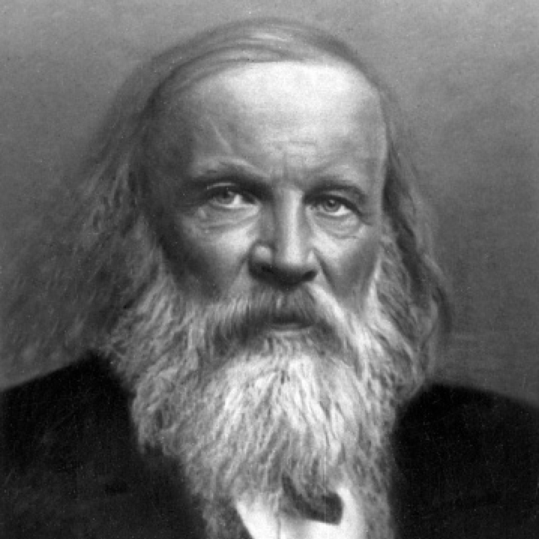
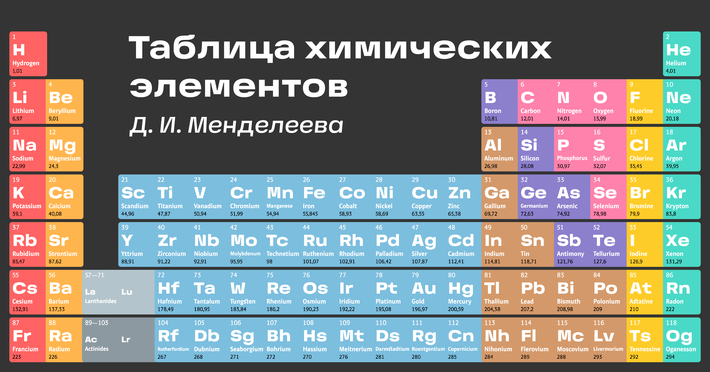

Дмитрий Иванович Менделеев
Гениальный русский химик был семнадцатым ребенком в семье директора Тобо́льской гимназии и училищ Тобо́льского округа Ива́на Па́вловича Менделе́ева. Родители Дми́трия Ива́новича, рано заметившие выдающиеся способности своего сына, вопреки стесненному материальному положению, сделали все возможное для их развития. После окончания Тобольской гимназии Менделеев поступил в Главный педагогический институт в Петербурге, где нашел выдающихся и заинтересованных учителей. В 1856 году Д. И. Менделеев защитил маги́стерскую диссертацию «Об удельных объёмах» и уже в 23 года стал доце́нтом университета.
В 1864 году Дмитрия Ивановича избрали профессором Петербургского технологического института, а через год он защитил докторскую диссертацию «О соединениях спирта с водой». В 1867 году Менделеев получил в университете кафедру неорганической химии, которую занимал в течение 23 лет. Именно в этот период произошёл расцвет его научного творчества и педагогической деятельности, связанный с открытием Периоди́ческого закона в 1869 году и выходом в свет фундаментального труда «Основы химии».
Весной 1890 года Менделеев покинул университет в знак протеста против позиции правительства по отношению к студенческим волнениям. Впоследствии его интересы и деятельность были связаны, в основном, с решением практических задач. Менделеев многие годы посвятил экономическому развитию страны, а также занимался проблемами в сфере охраны природы.
Появление творческого гения Менделеева было востребовано временем, было своего рода ответом на потребности развивающейся России

